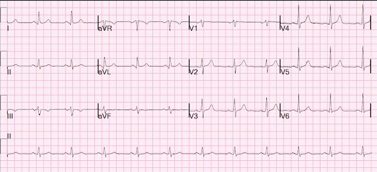
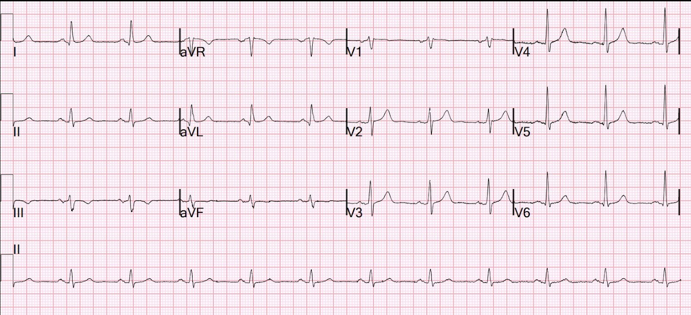
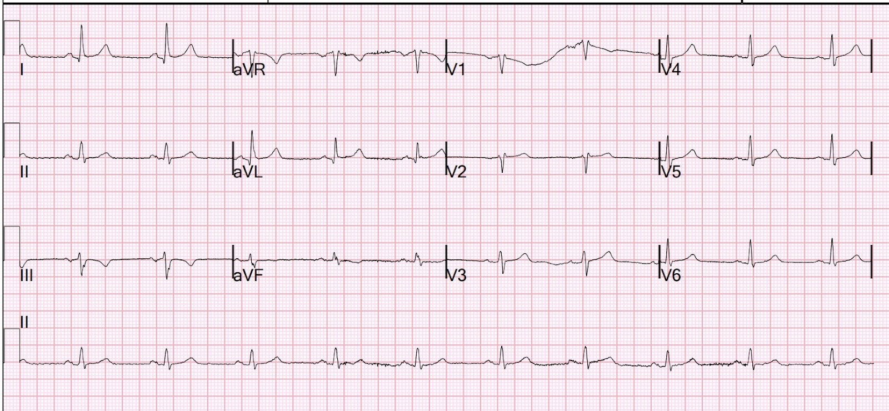
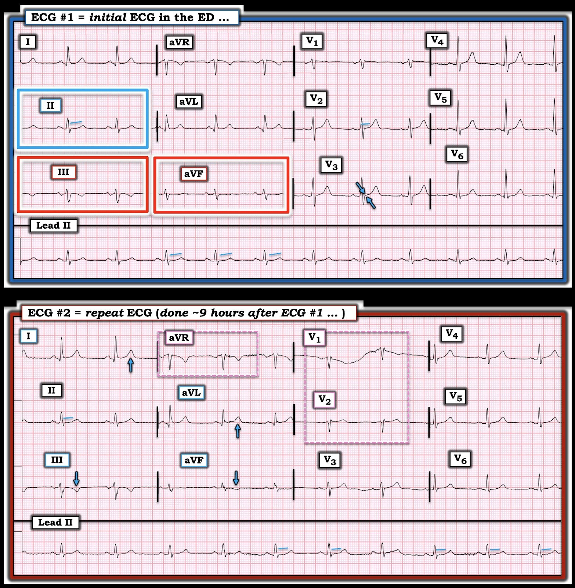

17/05/2025 — Đau ngực, điện tâm đồ bình thường và troponin độ nhạy cao liên tiếp không phát hiện được. Có nên làm thêm xét nghiệm?
Bản dịch tiếng Việt của bài "Chest pain, normal ECG, and serial undetectable high sensitivity troponins. Should we do further testing?" – Dr. Smith’s ECG Blog. Giữ nguyên toàn bộ 4 hình ảnh của bản gốc.


Nhiều tác giả khẳng định rằng nếu troponin không phát hiện được và điện tâm đồ bình thường thì không cần làm thêm xét nghiệm nào nữa. Ví dụ, trên tạp chí JACC:
Bandstein N, Ljung R, Johansson M, Holzmann MJ. Undetectable high-sensitivity cardiac troponin T level in the emergency department and risk of myocardial infarction (Nồng độ troponin T tim độ nhạy cao không phát hiện được tại khoa cấp cứu và nguy cơ nhồi máu cơ tim). J Am Coll Cardiol [Internet] 2014;63(23):2569–78. Truy cập tại: http://dx.doi.org/10.1016/j.jacc.2014.03.017
Kết luận Mọi bệnh nhân đau ngực có nồng độ hs-cTnT ban đầu <5 ng/l và không có dấu hiệu thiếu máu cục bộ trên điện tâm đồ đều có nguy cơ nhồi máu cơ tim (MI) hoặc tử vong trong vòng 30 ngày ở mức tối thiểu, và có thể cho xuất viện an toàn ngay từ khoa cấp cứu (ED).
Đưa ra những khẳng định chung chung, dứt khoát kiểu như thế này là rất nguy hiểm: “Mọi bệnh nhân….”
Ca bệnh
Một bệnh nhân ngoài 70 tuổi, có tiền sử rối loạn lipid máu và đau lưng mạn tính, đến khoa cấp cứu vì đau ngực.
Bệnh nhân than đau ngực trái, mô tả là cảm giác bóp nghẹt, từng cơn, kéo dài 10 ngày nay. Một ghi chép nói rằng cơn đau không liên quan đến gắng sức và xuất hiện mà không có yếu tố khởi phát rõ ràng, nhưng một ghi chép khác lại nói rằng có liên quan đến gắng sức. Cơn đau ngực gần nhất là 2 ngày trước. Bệnh nhân nói có thể leo cầu thang mà không gặp khó khăn. Không có triệu chứng kèm theo nào khác. Không buồn nôn, không vã mồ hôi, không khó thở, không có hướng lan của cơn đau. Cơn đau bắt đầu 1.5 tuần trước, bệnh nhân mô tả là cảm giác khó chịu nhiều hơn là đau; mỗi cơn kéo dài 20-30 giây. Bệnh nhân có tiền sử gia đình mắc bệnh tim đã biết (cha bị đau thắt ngực)
Điện tâm đồ


Bạn nghĩ gì? Bạn sẽ làm gì?
Hãy cùng tính vài thang điểm nguy cơ: thang điểm HEART và thang điểm EDACS (ED Assessment of Chest Pain — đánh giá đau ngực tại khoa cấp cứu):
Thang điểm HEART cho các biến cố tim mạch chính: 4 điểm (nguy cơ trung bình)
Điểm trung bình (4-6 điểm)
Nguy cơ biến cố tim mạch chính (MACE) trong 30 ngày = 12-16.6%.
Bệnh sử (History) —> 1 = Nghi ngờ mức độ vừa (tôi cho điểm này vì cơn đau chỉ kéo dài 20-30 giây, trong khi đau do thiếu máu cục bộ thường kéo dài ít nhất vài phút)
Điện tâm đồ (EKG) —> 0 = Bình thường
Tuổi (Age) —> 2 = ≥65
Yếu tố nguy cơ (Risk factors) —> 1 = 1-2 yếu tố nguy cơ
Troponin ban đầu —> 0 = ≤giới hạn bình thường
EDACS: 22 điểm, Không phải nguy cơ thấp.
Tuổi —> 78 tuổi
Giới —> 6 = Nam
Vã mồ hôi —> 0 = Không
Đau lan ra cánh tay, vai, cổ hoặc hàm —> 0 = Không
Đau xuất hiện hoặc tăng lên khi hít vào —> 0 = Không
Đau tái hiện khi ấn chẩn —> 0 = Không
Đây là dữ liệu thú vị từ nghiên cứu HIGH-STEACS, sử dụng xét nghiệm hs-cTnI Abbott Architect.
Trong nghiên cứu này, việc dùng các thang điểm nguy cơ có rất ít giá trị
Chapman AR, Hesse K, Andrews J, và cs. High-Sensitivity Cardiac Troponin I and Clinical Risk Scores in Patients With Suspected Acute Coronary Syndrome (Troponin I tim độ nhạy cao và các thang điểm nguy cơ lâm sàng ở bệnh nhân nghi ngờ hội chứng vành cấp). Circulation [Internet] 2018;138(16):1654–65. Truy cập tại: http://dx.doi.org/10.1161/CIRCULATIONAHA.118.036426
–Điện tâm đồ không có thiếu máu cục bộ
–Triệu chứng ＞3 giờ tính đến lúc lấy máu VÀ hs-cTnI ban đầu ＜5 ng/L hoặc
–Đau với thời gian bất kỳ và giá trị ban đầu ＜giới hạn trên tham chiếu (URL) (16 ng/L ở nữ, 34 ng/L ở nam) và chênh lệch (delta) sau 3 giờ ＜3 ng/L.
–Xác định được 65% bệnh nhân có nguy cơ thấp về tử vong/nhồi máu cơ tim trong 30 ngày, với giá trị tiên đoán âm (NPV) 99.7% (độ nhạy 98.7%)
–Dùng thang điểm HEART hoặc EDACS:
–NPV: HEART: 99.9 so với 99.7 với EDACS
–Tỷ lệ % được loại trừ: chỉ 24% với HEART, 41% với EDACS.
–Như vậy, dùng các thang điểm hầu như không làm thay đổi NPV, nhưng số bệnh nhân được loại trừ lại ít hơn nhiều.
Vậy thì tại sao lại dùng các thang điểm?
1. Nếu cơn đau ngắn đến mức bạn không thể nào kỳ vọng troponin tăng (trong ca này là 20-30 giây)
2. Nghiên cứu này tìm tử vong hoặc nhồi máu cơ tim, nhưng MACE 30 ngày còn bao gồm cả PCI!
3. Nhiều bệnh nhân không khớp với quy trình. Ví dụ: troponin ban đầu 10 ng/L và chênh lệch (delta) 5 ng/L.
Điện tâm đồ âm tính và 2 lần troponin không phát hiện được có loại trừ được ACS không?
Xin nhắc lại, bạn chỉ có thể kỳ vọng troponin tăng nếu cơn đau kéo dài đủ lâu. Chưa ai từng xác định được thế nào là đủ lâu.
Đây là một nghiên cứu thú vị trên tạp chí Circulation:
Árnadóttir Á, Pedersen S, Bo Hasselbalch R, và cs. Temporal Release of High-Sensitivity CardiacTroponin T and I and Copeptin After Brief InducedCoronary Artery Balloon Occlusion in Humans (Diễn biến theo thời gian của sự phóng thích troponin T và I tim độ nhạy cao và copeptin sau khi gây tắc động mạch vành ngắn bằng bóng ở người). Circulation [Internet] 2021;143(11):1095–104. Truy cập tại: http://dx.doi.org/10.1161/CIRCULATIONAHA.120.046574
Ba mươi tư bệnh nhân (tuổi trung vị 60 [khoảng tứ phân vị
51–64]; 15 nam, 43%) có động mạch vành bình thường trên chụp mạch
được phân ngẫu nhiên vào 4 nhóm với thời gian gây thiếu máu
cơ tim cục bộ khác nhau (0, 30, 60, 90 s). Thiếu máu cục bộ được gây ra bằng cách bơm
bóng trong động mạch liên thất trước, giữa nhánh chéo thứ nhất và nhánh chéo
thứ hai.
Dựa trên nồng độ cTnT, hscTnI (Siemens) và hs-cTnI (Abbott) tại thời điểm 0 và 180 phút, lần lượt có 1
(11%), 0 và 0 bệnh nhân ở nhóm thiếu máu cục bộ 60 giây, và 5 (63%), 2 (25%)
và 1 (11%) bệnh nhân ở nhóm thiếu máu cục bộ 90 giây, đáp ứng tiêu chuẩn
nhồi máu cơ tim về mặt sinh hóa.
Như vậy, tắc HOÀN TOÀN rất ngắn, dưới 90 giây, thường sẽ không làm troponin tăng. Tuy nhiên, các bệnh nhân này thường có chênh lệch (delta) đáng kể.
Vậy chúng ta nên làm gì cho bệnh nhân này, người có điểm nguy cơ cao và có kết quả troponin không thể tin cậy vì cơn đau kéo dài quá ngắn?
–Chụp CT mạch vành
Bệnh nhân được chụp CT mạch vành: điểm vôi hóa (calcium score) là 3600!
9 giờ sau:


Siêu âm tim bình thường
Chụp mạch vành:
Vôi hóa mạch vành nặng cả hai bên và bệnh mạch vành (CAD) tắc nghẽn nặng hai nhánh, liên quan đến thân chung động mạch vành trái và LAD đoạn lỗ xuất phát-đoạn gần
Bệnh nhân đã được phẫu thuật bắc cầu chủ vành (CABG) thành công
Đây là 5 ca khác thuộc chủ đề “Unstable Angina in the Era of High Sensitivity Troponin” (Đau thắt ngực không ổn định trong kỷ nguyên troponin độ nhạy cao)
Phần lớn các ca này có thể nhận ra được từ điện tâm đồ

===================================
BÌNH LUẬN CỦA TÔI, bởi KEN GRAUER, MD (17/5/2025):
===================================
Khi tôi có dịp xem lại ca hôm nay — những thông tin tôi được cung cấp gồm có:
- Bệnh nhân là nam giới 70 tuổi.
- “PMH” (Past Medical History — tiền sử bệnh) gồm rối loạn lipid máu và đau lưng mạn tính — nhưng không đề cập đến bệnh tim đã biết.
- “CC” (Chief Complaint — lý do vào viện) là CP (Chest Pain — đau ngực).
- 2 lời kể bệnh sử (có vẻ do 2 bác sĩ khác nhau ghi lại) về “HPI” (History of Present Illness — bệnh sử hiện tại) của bệnh nhân này.
- Theo Lời kể HPI #1 — CP có tính chất “bóp nghẹt” và ở bên trái, xuất hiện từng cơn trong 10 ngày trước đó và không liên quan đến gắng sức.
- Theo Lời kể HPI #2 — CP là cảm giác “khó chịu” nhiều hơn là đau — chỉ kéo dài 20-30 giây, xuất hiện trong 1.5 tuần trước đó — và CP này nặng hơn khi gắng sức.
============================
Lưu ý của tác giả ( = Quan điểm của tôi với vai trò “người phản biện” (Devil’s Advocate) về ca này … ):
============================
Do không biết liệu đã có thêm thông tin lâm sàng nào (hoặc sự xác nhận nào) được thu thập kể từ lần đầu tôi xem ca hôm nay hay chưa — tôi nghĩ nên trình bày suy nghĩ của mình dựa trên những thông tin nêu trên, là những gì tôi được cung cấp vào thời điểm tôi đọc lần đầu 2 điện tâm đồ của ca hôm nay.
- Sự khác biệt về HPI (theo mô tả trong ghi chép của 2 bác sĩ khác nhau, mỗi người đều đã hỏi bệnh chính bệnh nhân này) — chính là lý do vì sao tôi chưa bao giờ thấy các phép tính đánh giá nguy cơ bằng điểm số là hữu ích (Thang điểm HEART và EDACS áp dụng trong ca hôm nay cho thấy nguy cơ ít nhất ở mức trung bình — điều mà trên thực tế lẽ ra phải hiển nhiên ngay lập tức, không cần tính điểm chính thức, khi xét tuổi 70 của người đàn ông này, người đến ED vì CP mới xuất hiện).
- Chuyển HPI thành một đánh giá bằng điểm số là một việc mang tính chủ quan — điều mà tôi thấy khó tin tưởng khi 2 bác sĩ có năng lực lại đưa ra những đánh giá khác nhau về thông số MẤU CHỐT: CP có nặng hơn khi gắng sức hay không. Điều còn thiếu trong Lời kể HPI #2 là những “chi tiết tinh tế” của bệnh sử (tức là, Ngay cả khi CP do gắng sức chỉ “thoáng qua” — nếu mỗi lần bệnh nhân đi nhanh hơn một chút là ông phải dừng lại vì chút gắng sức thêm ấy thường xuyên khởi phát CP — thì đây thực sự có thể là đau thắt ngực).
- Về mặt thống kê — tiền sử đau thắt ngực thường xuyên khởi phát khi gắng sức thêm ở một người đàn ông 70 tuổi gợi ý bệnh mạch vành nền cho đến khi chứng minh được điều ngược lại.
- Về mặt khái niệm — có một sự hiểu lầm lớn ẩn trong cách tiếp cận của nhiều người tại ED. Trọng tâm thường được đặt chủ yếu (nếu không muốn nói là duy nhất) vào việc loại trừ một biến cố cấp, được thực hiện bằng các lần xét nghiệm Troponin liên tiếp âm tính và các điện tâm đồ liên tiếp không có biểu hiện cấp. Nhưng thay vì một OMI cấp — nhiều bệnh nhân tìm đến chăm sóc y tế cấp cứu có đau thắt ngực không nhồi máu, tình trạng không nhất thiết đòi hỏi thông tim ngay, nhưng thực sự đòi hỏi được đánh giá kịp thời. Theo kinh nghiệm của tôi — việc đánh giá đó thường bị bỏ ngỏ một khi bệnh nhân đã được cho xuất viện với Troponin âm tính.
2 điện tâm đồ trong ca hôm nay có “bình thường” không?
Một vấn đề khác mà tôi luôn gặp phải với các thang điểm đánh giá nguy cơ bằng con số ở bệnh nhân CP — là việc đánh giá điện tâm đồ bị quy giản thành một mức điểm. Trong ca hôm nay — thang điểm HEART đã xếp điện tâm đồ ban đầu là “bình thường” ( = 0 điểm).
Để dễ theo dõi, trong Hình 1 — tôi đã trình bày lại 2 điện tâm đồ của ca hôm nay.
- Đáng tiếc là — không có thông tin nào về sự hiện diện hay mức độ nặng tương đối của CP vào thời điểm ghi 2 điện tâm đồ này. Như chúng tôi vẫn thường nhấn mạnh — đây là thông tin then chốt, vì cách chúng ta đọc điện tâm đồ #1 sẽ khác hẳn nếu bệnh nhân đang đau ngực 10/10 liên tục so với nếu cơn CP khiến ông đến ED đã giảm nhiều (hoặc hết hoàn toàn) vào thời điểm ghi điện tâm đồ #1.
Dù tôi hoàn toàn đồng ý rằng điện tâm đồ #1 không có giá trị chẩn đoán một biến cố cấp — tôi vẫn cho rằng nó không “bình thường”.
- Đúng là sóng T đảo ngược không nhất thiết là một dấu hiệu bất thường ở chuyển đạo III và aVF khi phức bộ QRS chủ yếu âm ở các chuyển đạo này — NHƯNG NẾU sóng T đảo ngược này là một dấu hiệu mới xuất hiện, tương ứng với lúc đau ngực đã giảm vào thời điểm ghi điện tâm đồ #1 — thì dấu hiệu ST-T này có thể biểu hiện thay đổi tái tưới máu.
- Và dù không có đoạn ST lệch khỏi đường nền ở chuyển đạo II của điện tâm đồ #1 — 10 lần quan sát sóng ST-T mà chúng ta có được trên dải nhịp chuyển đạo II dài của điện tâm đồ #1 gợi ý rằng có ST thẳng đuỗn không đặc hiệu (tức là không có giá trị chẩn đoán) ở chuyển đạo này.
- Như chúng tôi vẫn thường nhấn mạnh — bình thường có ST chênh lên nhẹ, dốc lên thoai thoải ở chuyển đạo V2 và V3. Thay vào đó — có gợi ý ST dẹt không đặc hiệu với đoạn ST không chênh lên ở chuyển đạo V3 (điểm J đẳng điện thấy nằm giữa 2 mũi tên XANH LAM).
- Ngoài ra — tôi thấy sóng ST-T ở chuyển đạo V2 (và có thể ở mức độ ít hơn ở các chuyển đạo lân cận V3,V4) trông hơi “đồ sộ” hơn một chút so với mức tôi thường dự đoán khi xét kích thước và hình dạng QRS ở các chuyển đạo này (tức là Liệu đây có thể là sóng T tối cấp?).
- Xin nhấn mạnh: Các dấu hiệu điện tâm đồ nêu trên không có giá trị chẩn đoán một biến cố cấp. Chúng cực kỳ tinh tế. Nhưng theo tôi, ở một người đàn ông 70 tuổi đến khoa cấp cứu vì đau ngực mới xuất hiện — điện tâm đồ #1 không phải là một bản ghi “bình thường” — và tùy theo thời điểm cũng như mức độ nặng tương đối của triệu chứng khi ghi bản ghi này, nó có thể biểu hiện thay đổi ST-T tái tưới máu ở một bệnh nhân bị OMI dưới-sau (hoặc thậm chí là thay đổi tối cấp ở thành trước).
Theo tôi — điện tâm đồ #2 củng cố nghi ngờ của tôi rằng bệnh nhân này có thể đã bị tắc động mạch vành trong thời gian ngắn và/hoặc có thể có bệnh mạch vành nền đáng kể.
- Điểm MẤU CHỐT: Chúng tôi được biết điện tâm đồ #2 được ghi ~9 giờ sau điện tâm đồ #1. Đáng tiếc là chúng tôi không biết có ghi thêm điện tâm đồ nào trong khoảng thời gian đó hay không, và cũng không được cho biết triệu chứng của bệnh nhân diễn biến ra sao trong 9 giờ này.
- Hãy hình dung đau ngực của bệnh nhân này đã giảm vào lúc ghi điện tâm đồ #2. So sánh từng chuyển đạo giữa 2 bản ghi trong Hình 1 cho thấy sóng T âm ở chuyển đạo III và aVF tăng kích thước tinh tế-nhưng-có-thật — và sóng T dương ở chuyển đạo I và aVL cũng tăng kích thước (các mũi tên XANH LAM trên điện tâm đồ #2). Nếu có khác biệt gì thì — đoạn ST ở chuyển đạo II và V3 còn dẹt hơn trên điện tâm đồ #2. Tôi cho rằng khó có khả năng tất cả các thay đổi này đều là kết quả của biến thiên ngẫu nhiên. Nhưng đáng tiếc là chúng ta đã mất khả năng đối chiếu các thay đổi điện tâm đồ này với lâm sàng — vì hồ sơ bệnh án không hề đề cập đến việc có đau ngực hay không, hoặc mức độ nặng tương đối của đau ngực, vào lúc ghi điện tâm đồ #2.
- T.B. (P.S.): Điện cực V1 và V2 đã bị đặt quá cao trên thành ngực ở điện tâm đồ #2 (như được gợi ý bởi sóng P âm và rSr’ ở các chuyển đạo này, cùng hình dạng QRST của V1,V2 rất giống với aVR — như tôi đã trình bày trong phần Bình luận của tôi ở cuối trang, phần Bình luận của tôi trong bài ngày 18 tháng Mười Hai năm 2022). Nhận ra việc đặt sai vị trí điện cực này có ý nghĩa đối với việc đọc điện tâm đồ #2 — vì nó làm mất giá trị việc đánh giá và so sánh các chuyển đạo V1,V2 trên bản ghi lại này.
ĐIỀU CỐT LÕI: Trong ca hôm nay, chỉ định thông tim rồi phẫu thuật bắc cầu chủ vành (CABG) xuất phát từ phát hiện điểm CAC (Coronary Artery Calcium — điểm vôi hóa động mạch vành) rất cao trên chụp CT mạch vành.
- Dù hoàn toàn thừa nhận rằng các nhận xét của tôi được đưa ra trong sự thoải mái của văn phòng tại nhà, với màn hình máy tính lớn và chiếc ghế bành êm ái — tôi ngờ rằng chỉ định thông tim có lẽ đã có thể được đưa ra sớm hơn nhiều (và không cần chấm điểm CAC trên chụp CT mạch vành) — chỉ đơn giản bằng cách khai thác bệnh sử tập trung hơn và ghi các điện tâm đồ liên tiếp kịp thời hơn, đối chiếu với mức độ nặng tương đối của triệu chứng bệnh nhân. Tôi tin rằng hoàn toàn có khả năng các thay đổi điện tâm đồ có giá trị chẩn đoán đã xuất hiện trong khoảng thời gian giữa điện tâm đồ #1 và #2.

